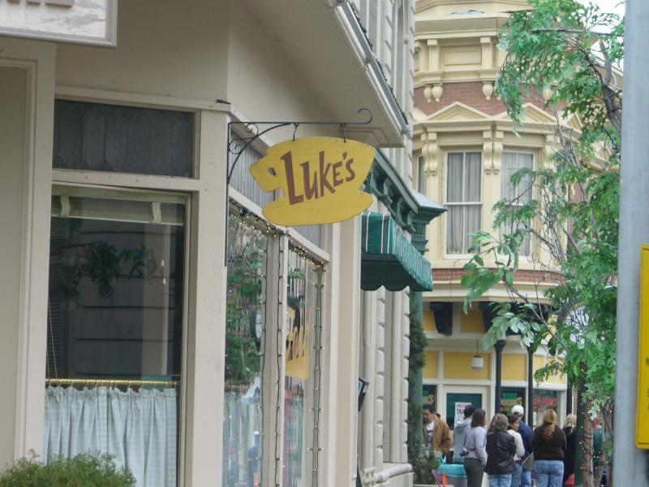

I'm Luke Danes, the owner Of Stars Hollow's diner. Originally, it was my father's hardware store. But now instead of buying hammers, people order burgers and pies.

Located in the center of town, next to the central park and grocery store, everyone in town is a regular, many using my diner as a meeting point.